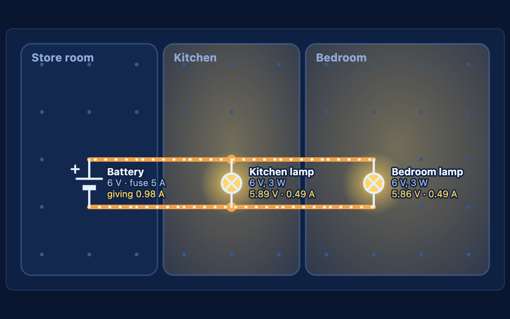
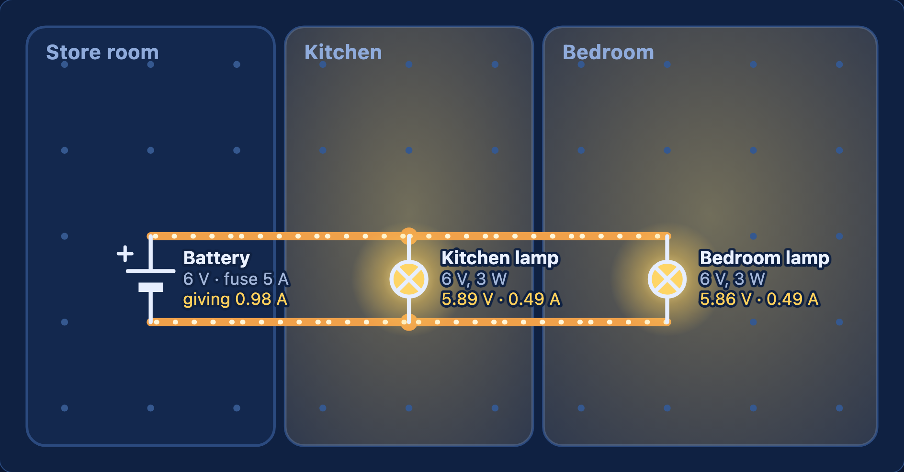
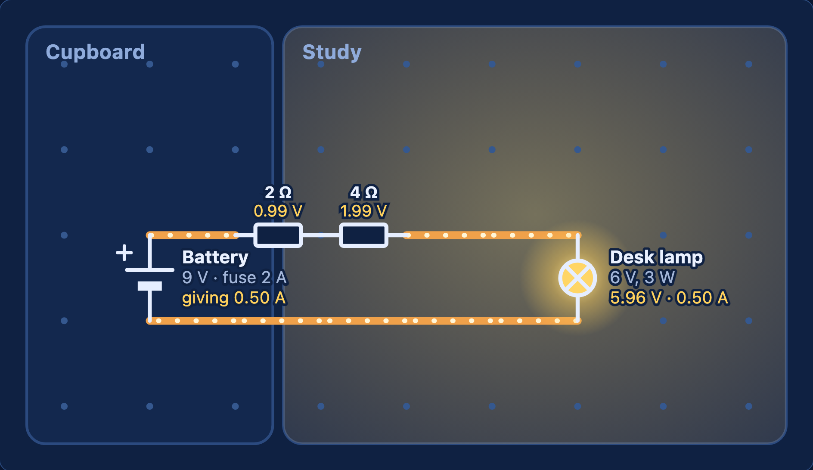

Wire up a house so every lamp lights: from complete circuits and switches to Ohm's law, fuses and cable losses.
UK Years 8–13Ages 12–18US grades 7–12Physics · Electricity
dowplay.com/games/light-it-up
Runs in any browser on Chromebooks, iPads, laptops and phones. No accounts, no ads, nothing to install. Progress is saved only on the device being used.
A separate PDF has the worksheets on their own, ready to print for students.
Light It Up turns circuit-building into a puzzle. Students wire up the rooms of a house so the lamps, appliances and gadgets work, within a budget. The game solves every circuit the way an electrical engineer would (nodal analysis), so the voltages and currents are real: lamps in series really do glow dimmer, and too much current really does blow the fuse. Its eight levels run from Year 8 to Year 13.
Each lesson plan fills 60 minutes. The levels also work as a homework or a club activity: each takes 5–15 minutes.
| Course | Content | Levels |
|---|---|---|
| KS3 Science (England) | Current in series and parallel circuits; currents add where branches meet; potential difference in volts; battery and bulb ratings; resistance as the ratio of potential difference to current | 1–5 |
| GCSE Physics / Combined Science | Circuit symbols; V = I R; series and parallel circuits; power (P = I V, P = I² R); domestic electricity, fuses and safety; why the National Grid transmits at high voltage | 2–8 |
| A-level Physics | Potential dividers and loading; resistance of wires and power losses | 7–8 |
| US (NGSS) | MS-ETS1-1, MS-ETS1-2, HS-ETS1-3: designing solutions within criteria and constraints, such as cost and safety | All |
The board is a real circuit:
A lamp or appliance counts as working when its voltage is within 20% of its rating (within 10% on levels 5, 6 and 8). Below 10% of its rating, it's off.
| Part | What it does | Notes |
|---|---|---|
| Battery or supply | A fixed voltage: 6, 9 or 12 V | Each has a fuse (5 A, 3 A, 2 A, 100 mA…) and a tiny internal resistance (0.05 Ω) |
| Lamp, appliance | Rated voltage and power, e.g. 6 V, 3 W | Resistance = V² ÷ P, so a 6 V, 3 W lamp is 12 Ω |
| Doorbell | Needs 2.8–3.2 V | A fixed 1 kΩ resistance |
| Wire | £1 per grid section | 0.01 Ω per section (Power to the Shed: thin wire 0.1 Ω; thick cable 0.01 Ω at £3) |
| Resistor | £3 each | 2, 4, 10, 12, 22, 47 or 100 Ω, depending on the level |
| Switch | Tap to open or close | Part of the level; circuits are tested both ways |
Wires glow and dots flow where current runs, and each room lights up when its lamps work. Ticking Show the numbers labels every lamp, appliance and resistor with its voltage and current, and the battery with the current it gives. The figures on the worksheets are taken straight from that view.
1 star for a working circuit, 2 for staying within the budget, 3 for matching the cheapest design we know. Students sometimes match it with a different layout.
Real lamp filaments get hotter and their resistance rises; in the game it's fixed. Real batteries run down, fuses take time to blow, and homes use alternating current (AC) at 230 V. Good discussion points with older students.
| Current (A) | The flow of charge, measured in amps. | Series | Components on one path, one after another. They share the voltage. |
| Voltage (V) | Potential difference: the push from the battery, in volts. | Parallel | Components on separate branches. Each gets the full voltage. |
| Resistance (Ω) | How much a component opposes current. R = V ÷ I. | Fuse | Melts and breaks the circuit if the current is too big. |
| Power (W) | Energy transferred each second. P = I × V. | Potential divider | Two resistances in series that share a voltage to give a smaller one. |
"3 stars" is the cheapest design we know. Keep it to yourself until students have had a go: the fun is in the search.
| Time | Activity |
|---|---|
| Starter 10 min | Open Level 1, Lights On. Lay one wire from the battery to the lamp: nothing happens. Ask why. Complete the loop and it lights. Then open Level 2, Two Rooms and ask: "If I chain the two lamps one after the other, how bright will they be?" Build it: both are dim. Then wire them in parallel: both are bright. |
| Main 1 15 min | Worksheet 1, Part A: which circuits work, series and parallel voltages, and why a 6 V lamp burns out on 12 V. |
| Main 2 25 min | Pairs play levels 1–4 and fill in the record table (Part B). Before pressing Check, one partner predicts what will happen. Circulate and ask: "Is that part in series or in parallel?" |
| Plenary 10 min | Part C together: the Two Rooms numbers. Currents add where branches meet (0.49 A + 0.49 A = 0.98 A). Exit ticket: why are the lights in a house wired in parallel? |
Use the in-game hints. For Two Rooms, ask students to trace each lamp's loop with a finger: does each lamp have its own path to both sides of the battery?
Tick Show the numbers and explain every value. Try Level 5, Pick the Resistor. Go for 3 stars on The Hall Switch (£16).
Homework: Worksheet 1, Part D, and get 3 stars on Level 2.
| Time | Activity |
|---|---|
| Starter 10 min | Show Level 5, Pick the Resistor. "The lamp needs 6 V and 0.5 A, and the battery gives 9 V. What resistor do we need?" Take answers, then show that the box has no 6 Ω resistor. How can 2 Ω and 4 Ω help? Build it with Show the numbers ticked. |
| Main 1 15 min | Worksheet 2, questions 1–3: Ohm's law, reading the game's numbers, and fuse currents. |
| Main 2 25 min | Pairs play levels 5–8 (Years 10–11 mainly levels 5–6; Years 12–13 levels 7–8). Use questions 4–5 to guide Smart Doorbell and Power to the Shed. |
| Plenary 10 min | Plan question 6 together: how house wiring is made safe and efficient. Finish it as homework. |
Give students the formula triangle for V = I R. In Two Fuses, have them write each appliance's current next to it before wiring anything.
Smart Doorbell: calculate the loaded output before building. Power to the Shed: find the most thin wire the heater's loop can have and still get 10.8 V.
Homework: Worksheet 2, question 6 (6 marks).
A1Which of these circuits will light the lamp? Explain your answer. [2]
A2Two identical 6 V lamps are connected to a 6 V battery.
a) In series, what voltage does each lamp get? [1]
b) In parallel, what voltage does each lamp get? [1]
c) Which way are the lamps brighter? [1]
A3In Twelve Volts, two 6 V lamps must work on a 12 V supply.
a) How should the lamps be connected? Explain why. [2]
b) What would happen to a 6 V lamp connected straight across 12 V? [1]
A4A 6 V, 3 W lamp takes 0.5 A from a 6 V battery.
a) Two of these lamps are connected in parallel to the battery. How much current does the battery give? [1]
b) Why does adding a lamp in parallel make the battery give more current? [1]
Before you press Check my circuit, predict what will happen. Record your best design for each level.
| Level | What I built | Cost | Stars | What went wrong, and how I fixed it |
|---|---|---|---|---|
| 1 | £ | |||
| 2 | £ | |||
| 3 | £ | |||
| 4 | £ |
This is Two Rooms with both lamps in parallel and Show the numbers ticked. Each label shows the voltage and the current.

C1What current does each lamp take? [1]
C2What current does the battery give? How does it compare with the lamps' currents? [2]
C3The lamps get 5.89 V and 5.86 V, not quite 6 V. Suggest why. [2]
C4Where would you put a switch to turn off only the bedroom lamp? [1]
D1The lights in a house are wired in parallel, not in series. Give three reasons why. [3]
1Pick the Resistor. A desk lamp needs 6 V and takes 0.5 A. The battery gives 9 V.
a) What voltage must a resistor in series with the lamp take? [1]
b) What resistance does it need? [2]
c) The box has 2 Ω, 4 Ω, 10 Ω and 22 Ω resistors. How can you make the resistance you need? [1]
d) How much power does the resistor waste as heat? [2]
2Read the numbers. This is the finished Pick the Resistor circuit, with Show the numbers ticked.

a) Add up the voltages across the two resistors and the lamp. Compare the total with 9 V, and explain any difference. [2]
b) Use the numbers to work out the lamp's resistance. Check it against its rating (6 V, 3 W). [2]
3Two Fuses. Two 12 V circuits each have a 3 A fuse. The appliances are a 24 W heater, an 18 W fridge, a 12 W TV and a 3 W lamp.
a) Work out the current each appliance takes. [2]
b) Explain why the heater and the fridge can't share a circuit. [1]
c) Suggest a way to share the four appliances between the two circuits. [1]
d) Why is it dangerous to replace a 3 A fuse with a 13 A fuse? [2]
4Smart Doorbell. A 9 V battery feeds a potential divider: R₁ = 94 Ω (two 47 Ω in series) on top and R₂ = 47 Ω below. The battery has a 100 mA fuse.
a) With nothing connected, what is the output voltage across R₂? [2]
b) What current flows through the divider? Is it safe for the fuse? [2]
c) The 1 kΩ doorbell is connected across R₂. Work out the combined resistance of R₂ and the doorbell, and the new output voltage. [3]
d) Why wouldn't a 22 Ω resistor on top and a 10 Ω resistor below work? [2]
5Power to the Shed. The shed heater is rated 12 V, 36 W. Assume its current stays the same.
a) What current does the heater take? [1]
b) Its loop is 20 sections of thin wire, 0.1 Ω each. What is the loop's resistance, and how much voltage is lost in it? [2]
c) Repeat (b) for thick cable at 0.01 Ω per section. [1]
d) Use P = I² × R to work out the power wasted in each loop. [2]
e) Explain why the National Grid sends electricity at very high voltages. [2]
6Evaluate. Evaluate how the wiring of a house is designed to be safe and efficient. Refer to parallel circuits, fuses and cable thickness, and use evidence from Light It Up. [6]
Continue on lined paper if you need more space.
A1(a) only (1). (b) has no complete loop: the lamp isn't joined back to the battery; in (c) the open switch breaks the loop (1).
A2a) 3 V each (they share the 6 V).
b) 6 V each.
c) In parallel.
A3a) In series (1): the lamps share the 12 V, so each gets the 6 V it needs (1).
b) It gets 12 V, twice its rating, and burns out.
A4a) 0.5 + 0.5 = 1 A.
b) Each branch takes its own current, and the currents add where the branches meet.
C10.49 A each.
C20.98 A (1): the sum of the two lamp currents, because currents add where branches meet (1).
C3The wires and the battery have a small resistance (1), so a little of the voltage is lost in them before it reaches the lamps; the bedroom lamp is further away, so it loses slightly more (1).
C4In the bedroom lamp's own branch, between the lamp and the point where its wires join the main loop.
D1Any three: every lamp gets the full voltage, so all are bright; each lamp can be switched on and off on its own; if one lamp breaks, the others stay on; adding more lamps doesn't make the others dimmer.
Free engineering games for ages 12–18: Gear Garage (gears and machines), Bridge Builder (structures) and Grid Manager (energy), each with a free teacher pack. Ideas for new games? Get in touch at dowplay.com/about#contact.
1a) 9 − 6 = 3 V.
b) R = V ÷ I = 3 ÷ 0.5 = 6 Ω.
c) 2 Ω and 4 Ω in series (2 + 4 = 6 Ω).
d) P = I × V = 0.5 × 3 = 1.5 W.
2a) 0.99 + 1.99 + 5.96 = 8.94 V (1). The other 0.06 V is lost in the wires and the battery's internal resistance (1).
b) R = 5.96 ÷ 0.50 = 11.9 Ω (1); the rating gives V² ÷ P = 36 ÷ 3 = 12 Ω, which matches (1).
3a) I = P ÷ V: heater 2 A, fridge 1.5 A, TV 1 A, lamp 0.25 A.
b) Together they take 3.5 A, more than the 3 A fuse.
c) For example, the heater alone on one circuit (2 A) and the fridge, TV and lamp on the other (2.75 A). Any split with no circuit over 3 A.
d) The fuse must blow before the cable overheats (1); a 13 A fuse would let a fault current flow that could overheat the wiring and start a fire (1).
4a) 9 × 47 ÷ (94 + 47) = 3.0 V.
b) 9 ÷ 141 = 0.064 A = 64 mA, under the 100 mA fuse, so safe.
c) 1 ÷ (1/47 + 1/1000) = 44.9 Ω (1); Vout = 9 × 44.9 ÷ (94 + 44.9) = 2.91 V (2), inside the 2.8–3.2 V range. (The game shows 2.91 V.)
d) 9 ÷ (22 + 10) = 0.28 A, which blows the 100 mA fuse (1); small resistors draw too much current (1). (With the doorbell connected its output would also be too low: 2.79 V.)
5a) 36 ÷ 12 = 3 A.
b) 20 × 0.1 = 2 Ω; 3 × 2 = 6 V lost.
c) 0.2 Ω; 0.6 V lost.
d) Thin: 3² × 2 = 18 W; thick: 3² × 0.2 = 1.8 W.
e) For the same power, a higher voltage means a smaller current (1); the power wasted in cables is I² R, so a smaller current wastes far less (1).
| Level | Description |
|---|---|
| 3 (5–6 marks) | A detailed evaluation of parallel wiring, fuses and cable thickness, linking each to safety or efficiency with evidence from the game (numbers or levels). Reaches a justified conclusion. |
| 2 (3–4 marks) | Explains at least two features with some evidence. The conclusion is partial or not fully justified. |
| 1 (1–2 marks) | Simple statements about one or two features, with little explanation. |
| 0 | Nothing worthy of credit. |
Credit references to earth wires, circuit breakers and RCDs, and to the National Grid's high transmission voltages.